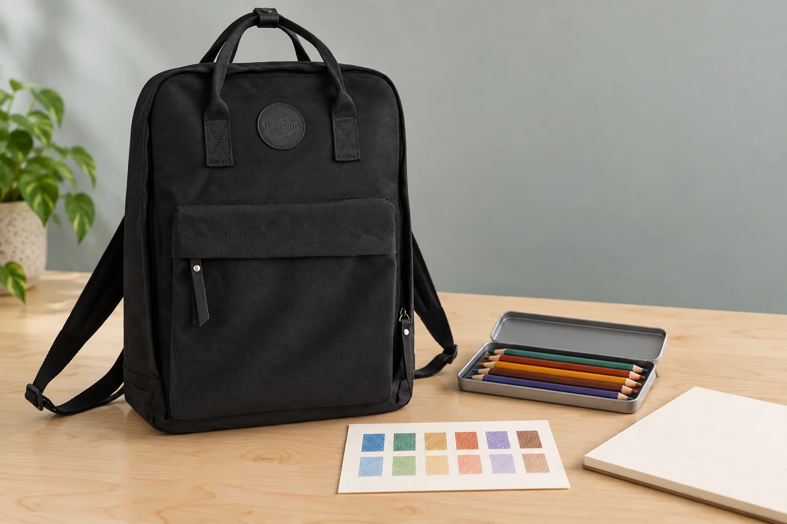

색연필을 챙기는 날: 오늘 쓸 종이에 작은 색상표 만들기

그림 수업에 가져갈 색연필을 고르는데 비슷한 초록색이 몇 자루 보입니다. 뚜껑이나 몸통의 색만으로 결정하기 어렵다면 오늘 쓸 종이의 작은 조각에 한 번씩 칠해보세요. 그 표를 색연필과 함께 챙기면 작업 자리에서도 어떤 연필을 썼는지 다시 찾기 쉽습니다.
같은 종이에서 비교할 자리를 만듭니다
스케치북의 남는 면이나 같은 종류의 별도 종이에 작은 칸을 나눕니다. 종이 이름이나 스케치북 정보를 한쪽에 적어두면 다음에 다른 종이를 쓸 때 구분할 수 있습니다. Faber-Castell의 Goldfaber 안내서 11페이지는 종이의 입자와 질감이 연필의 선과 그림의 인상에 영향을 준다고 설명합니다. 표는 지금 쓰는 종이에서의 비교 기록으로 봅니다.
칸 옆에는 연필을 다시 찾을 단서를 적습니다
색연필에 번호나 색 이름이 있다면 해당 칸 옆에 그대로 적습니다. 이름이 같아도 서로 다른 제품군의 연필을 섞어 쓴다면 제품군도 구분하세요. 표에 자신만 아는 별명을 붙였을 때는 실제 연필과 연결되는 메모를 남깁니다. 다른 사람의 인쇄된 색상표를 참고했더라도 자신의 종이에 칠한 결과와 똑같을 것이라고 단정하지 않습니다.
힘을 달리한 두 칸을 나란히 남겨봅니다
한 색마다 가볍게 칠한 부분과 조금 더 겹쳐 칠한 부분을 따로 만듭니다. 두 부분을 보는 것은 정답 색을 정하는 시험이 아니라 오늘의 손힘과 작업 방식을 기억하는 방법입니다. 여러 색을 섞어보고 싶다면 사용한 순서도 별도 칸에 적어두세요. 비교할 때마다 종이와 연필을 바꾸면 무엇이 달라졌는지 알아보기 어려우므로 한 번에 한 조건부터 바꿔봅니다.
백팩에는 표와 해당 도구를 함께 챙깁니다
작은 표가 다른 종이에 섞이지 않도록 스케치북이나 별도 파일의 정해 둔 자리에 넣습니다. 색상표를 만들고 정작 해당 연필을 빠뜨리지 않았는지 번호를 대조하세요. No.1084H의 카탈로그 외부 크기는 가로 28.5 × 세로 39 × 폭 12cm입니다. 블랙 몸체와 원형 패치, 넓은 앞 덮개를 원본에 맞춰 표현했으며 사진 속 필통이 특정 칸에 들어가는지는 확인하지 않았습니다.
참고·안내
- Himawari No.1084H 제품 정보
- 실제 Himawari No.1084H 블랙 원본을 참조한 AI 연출 사진입니다. 색연필·색상표·필통은 별도 소품이며 제품 구성품이나 수납 시험 결과가 아닙니다.
자주 묻는 질문
색연필 몸통과 색상표 색이 달라도 괜찮나요?
몸통 표시는 연필을 찾는 단서로 쓰고, 오늘 사용하는 종이에 칠한 표를 작업 참고로 삼아보세요. 종이나 칠하는 방식이 달라지면 자신의 표를 새로 비교합니다.
모든 색을 한 번에 칠해야 하나요?
오늘 사용할 몇 자루부터 만들 수 있습니다. 연필과 표의 번호가 맞는지 확인한 뒤 필요한 색을 조금씩 추가해보세요.